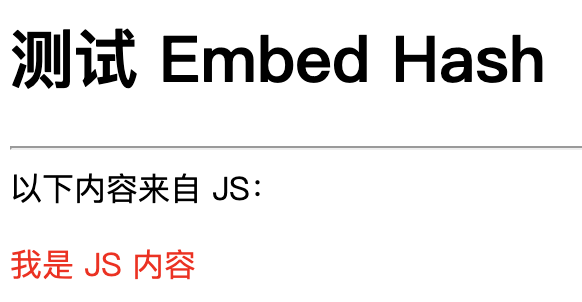
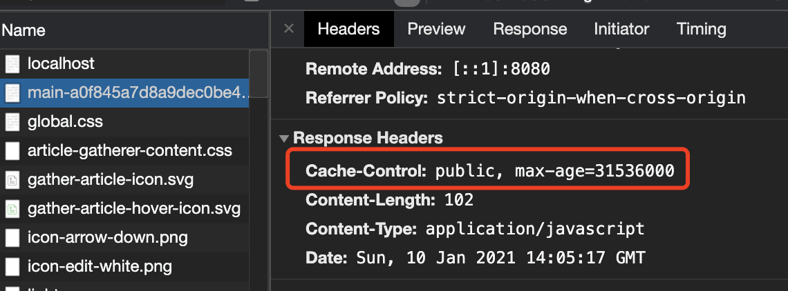
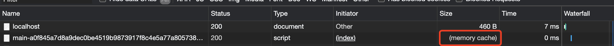

基于 Go1.16 实现静态文件的 HTTP Cache
大家好，我是站长 polarisxu。
之前写过一篇文章：《提前试用将在 Go1.16 中发布的内嵌静态资源功能》 ，如果之前没阅读，建议继续看本文前先阅读下该文。
现在 Go 1.16 Beta 已经发布，离正式版发布不远了，在 GitHub 发现了一个库，它实现了 io/fs.FS 接口，它能够计算文件的 SHA256 哈希值并附加到文件名中以允许进行 HTTP Cache：即控制静态文件的版本。本文对其进行介绍并顺带讲解一些涉及到的其他内容。
温馨提示：本文内容基于 Go 1.16 Beta，之前版本不支持！
01 hashfs 包
包地址：https://github.com/benbjohnson/hashfs ，有效代码函数不到 200。
对于给定的一个文件，比如 scripts/main.js，hashfs.FS 文件系统处理后会生成一个带 hash 的文件，类似 scripts/main-b633a..d628.js（中间有省略），客户端请求该文件时，可以选择让客户端缓存。hash 算法使用的是 SHA256。当文件内容发生变化时，hash 值也会变。
该包默认提供对 net/http 的兼容。通过例子看看具体怎么使用。
02 基于 net/http 的使用
创建一个目录，使用 module：
$ mkdir ~/embed
$ cd ~/embed
$ go mod init gtihub.com/polaris1119/embed
为了基于同一个项目演示不同使用方式，创建如下目录结构：
├── cmd
│ ├── std
│ │ └── main.go
├── embed.go
├── go.mod
├── go.sum
├── static
│ └── main.js // 主要处理该文件的嵌入、hash
├── template
│ └── index.html
其中 embed.go 的作用在本文开头文章提到过，内容如下：
package embed
import (
"embed"
"github.com/benbjohnson/hashfs"
)
//go:embed static
var embedFS embed.FS
// 带 hash 功能的 fs.FS
var Fsys = hashfs.NewFS(embedFS)
再说一句，因为 //go:embed 只能相对当前源文件所在目录，所以单独创建这个文件以便和 static 在同一级目录。
index.html 和 main.js 的内容很简单。
index.html：
<html>
<head>
<title>测试 Embed Hash</title>
<script src="/assets/{{.mainjs}}"></script>
</head>
<body>
<h1>测试 Embed Hash</h1>
<hr>
<div>
以下内容来自 JS：
</div>
<p id="content" style="color: red;"></p>
</body>
</html>
该模板中有一个变量：mainjs。
main.js：
window.onload = function() {
document.querySelector('#content').innerHTML = "我是 JS 内容";
}
如果一切正常，看到的页面如下：

在 cmd/std/main.go 中写上如下代码：
package main
import (
"fmt"
"html/template"
"log"
"net/http"
"github.com/benbjohnson/hashfs"
"github.com/polaris1119/embed"
)
func main() {
http.Handle("/assets/", http.StripPrefix("/assets/", hashfs.FileServer(embed.Fsys)))
http.HandleFunc("/", func(w http.ResponseWriter, r *http.Request) {
tpl, err := template.New("index.html").ParseFiles("template/index.html")
if err != nil {
fmt.Fprint(w, err.Error())
return
}
err = tpl.Execute(w, map[string]interface{}{
"mainjs": embed.Fsys.HashName("static/main.js"),
})
if err != nil {
fmt.Fprint(w, err.Error())
return
}
})
log.Fatal(http.ListenAndServe(":8080", nil))
}
- 特意为静态资源加上
/assets/前缀，后文解释； hashfs.FileServer(embed.Fsys))是 hashfs 包对 net/http 的支持，即 hashfs.FileServer 是一个 http.Handler；embed.Fsys.HashName("static/main.js")将文件生成为带 hash 的；
执行 go run ./cmd/std/main.go，打开浏览器访问：http://localhost:8080 即可看到上面截图的页面，审查元素可以看到如下信息，缓存一年。（见代码：https://github.com/benbjohnson/hashfs/blob/main/hashfs.go#L200
）

当你再次刷新浏览器，看到 js 文件直接从缓存获取的。

当 main.js 的内容发生变化，main-xxx.js 中的 hash 部分也会变化，你可以自行试验。（注意，因为资源内嵌了，修改了 js 的内容，需要重新 go run）。
03 关于服务静态文件
这块有必要单独拿出来说下，因为比较容易搞错。比如上面的一行代码改为这样：
http.Handle("/assets", http.StripPrefix("/assets", hashfs.FileServer(embed.Fsys)))
再次运行结果就不对（没有 “我是 JS 内容”）。（注意禁用浏览器缓存，否则看不到效果）
如果是 Echo 框架，则可以：
e.Static("/assets", ".")
Gin 框架，也可以：
router.Static("/assets", ".")
关于其中的细节，大家有兴趣可以查阅相关源码。这里只要记住，服务目录，末尾加上 /，（目录嘛，应该有 /），即：
http.Handle("/assets/", ...)
04 基于 Echo 的使用
在 cmd 目录下创建 echo/main.go 文件：
package main
import (
"bytes"
"fmt"
"io"
"mime"
"net/http"
"net/url"
"os"
"path"
"strconv"
"text/template"
"github.com/benbjohnson/hashfs"
"github.com/labstack/echo/v4"
"github.com/polaris1119/embed"
)
func main() {
e := echo.New()
e.GET("/assets/*", func(ctx echo.Context) error {
filename, err := url.PathUnescape(ctx.Param("*"))
if err != nil {
return err
}
isHashed := false
if base, hash := hashfs.ParseName(filename); hash != "" {
if embed.Fsys.HashName(base) == filename {
filename = base
isHashed = true
}
}
f, err := embed.Fsys.Open(filename)
if os.IsNotExist(err) {
return echo.ErrNotFound
} else if err != nil {
return echo.ErrInternalServerError
}
defer f.Close()
// Fetch file info. Disallow directories from being displayed.
fi, err := f.Stat()
if err != nil {
return echo.ErrInternalServerError
} else if fi.IsDir() {
return echo.ErrForbidden
}
contentType := "text/plain"
// Determine content type based on file extension.
if ext := path.Ext(filename); ext != "" {
contentType = mime.TypeByExtension(ext)
}
// Cache the file aggressively if the file contains a hash.
if isHashed {
ctx.Response().Header().Set("Cache-Control", `public, max-age=31536000`)
}
// Set content length.
ctx.Response().Header().Set("Content-Length", strconv.FormatInt(fi.Size(), 10))
// Flush header and write content.
buf := new(bytes.Buffer)
if ctx.Request().Method != "HEAD" {
io.Copy(buf, f)
}
return ctx.Blob(http.StatusOK, contentType, buf.Bytes())
})
e.GET("/", func(ctx echo.Context) error {
tpl, err := template.New("index.html").ParseFiles("template/index.html")
if err != nil {
return err
}
var buf = new(bytes.Buffer)
err = tpl.Execute(buf, map[string]interface{}{
"mainjs": embed.Fsys.HashName("static/main.js"),
})
if err != nil {
return err
}
return ctx.HTML(http.StatusOK, buf.String())
})
e.Logger.Fatal(e.Start(":8080"))
}
- 服务静态文件的代码：
e.GET("/assets/*", func(ctx echo.Context) error {，主要参照了 https://github.com/benbjohnson/hashfs/blob/main/hashfs.go#L162 的实现； - 首页的路由和 net/http 基本一样，关注 mainjs 模板变量；
简单解释下服务静态文件的实现原理：
- 获取请求的路径（
*部分）; - 通过 hashfs.ParseName 解析出文件的 base 和 hash 两部分；
- 使用 fs.FS 打开文件，判断文件类型、大小，并将内容返回给客户端，如果有缓存，设置 HTTP Cache；
运行 go run ./cmd/echo/main.go，不出意外和 net/http 版本一样的效果。
05 基于 Gin 的使用
其实知道了如何基于 Echo 框架使用，其他框架参照着实现即可。因为 Gin 框架用户多，因此也实现下。
在 cmd 目录下创建文件：gin/main.go
package main
import (
"bytes"
"io"
"mime"
"net/http"
"net/url"
"os"
"path"
"strconv"
"strings"
"github.com/benbjohnson/hashfs"
"github.com/gin-gonic/gin"
"github.com/polaris1119/embed"
)
func main() {
r := gin.Default()
r.GET("/assets/*filepath", func(ctx *gin.Context) {
filename, err := url.PathUnescape(ctx.Param("filepath"))
if err != nil {
ctx.AbortWithError(http.StatusInternalServerError, err)
return
}
filename = strings.TrimPrefix(filename, "/")
isHashed := false
if base, hash := hashfs.ParseName(filename); hash != "" {
if embed.Fsys.HashName(base) == filename {
filename = base
isHashed = true
}
}
f, err := embed.Fsys.Open(filename)
if os.IsNotExist(err) {
ctx.AbortWithError(http.StatusNotFound, err)
return
} else if err != nil {
ctx.AbortWithError(http.StatusInternalServerError, err)
return
}
defer f.Close()
// Fetch file info. Disallow directories from being displayed.
fi, err := f.Stat()
if err != nil {
ctx.AbortWithError(http.StatusInternalServerError, err)
return
} else if fi.IsDir() {
ctx.AbortWithError(http.StatusForbidden, err)
return
}
contentType := "text/plain"
// Determine content type based on file extension.
if ext := path.Ext(filename); ext != "" {
contentType = mime.TypeByExtension(ext)
}
// Cache the file aggressively if the file contains a hash.
if isHashed {
ctx.Writer.Header().Set("Cache-Control", `public, max-age=31536000`)
}
// Set content length.
ctx.Writer.Header().Set("Content-Length", strconv.FormatInt(fi.Size(), 10))
// Flush header and write content.
buf := new(bytes.Buffer)
if ctx.Request.Method != "HEAD" {
io.Copy(buf, f)
}
ctx.Data(http.StatusOK, contentType, buf.Bytes())
})
r.LoadHTMLGlob("template/*")
r.GET("/", func(ctx *gin.Context) {
ctx.HTML(http.StatusOK, "index.html", gin.H{
"mainjs": embed.Fsys.HashName("static/main.js"),
})
})
r.Run(":8080")
}
服务静态文件的内容和 Echo 框架基本一样，除了各自框架特有的。
因为 Gin 框架提供了 LoadHTMLGlob，首页路由的处理函数代码很简单。
运行 go run ./cmd/gin/main.go，不出意外和 net/http 版本一样的效果。
06 总结
举一反三，在学习过程中可以让你更好的掌握某个知识点。
之前有读者问到 module 如何使用 vendor（没网情况下使用）。今天试验这个就是用了 vendor。其实它的使用很简单，在项目下执行：go mod vendor 即可。不过需要注意的是，加入了新的依赖，就应该执行一次 go mod vendor。
今天介绍的这个库在这个时代用到的可能性不高，不过也有可能会用得到。更重要的是希望这篇文章可以作为一个小项目实践下。希望你能从头自己编码实现。
另外还留了一个问题给你：index.html 文件没有内嵌，请你自己完成。（提示：html/template 增加了对 io/fs.Fs 的支持）
本项目完整代码：https://github.com/polaris1119/embed 。